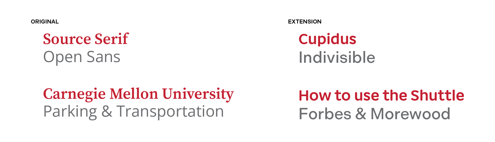
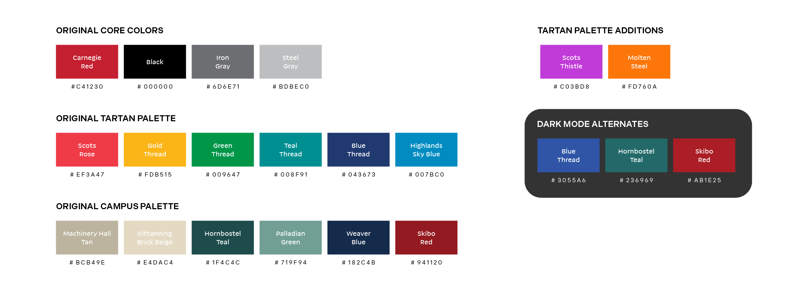
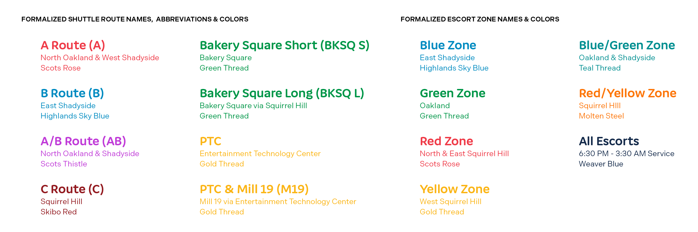
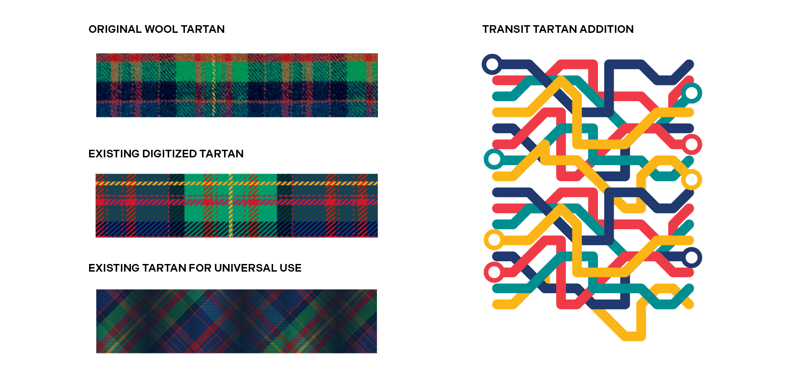

cmu shuttles reimagined
CMU offers transportation to students and faculty to surrounding neighborhoods at all hours of the day. This service is completely free and incredibly safe and reliable, so why do so few of my classmates know about it? How can better shuttle branding improve student understanding and ridership?
TIME: in progress
ROLE: research, wayfinding, brand extension, print
TOOLS: adobe suite
research
To avoid designing in a vacuum, I started this redesign with the goal to learn as much as possible about the people actually involved. I surveyed about 40 CMU students from all different walks of life to gauge how well the student body understands the shuttle service available to them. Here are some highlights of that research.
This research period also included talking to Michelle Porter, Director of Transportation at CMU, and Student Senate, who was tackling a similar issue at the time. The final portion of my research was a deep dive into different digital products that could also help improve ridership. Rather than redesigning their current real-time tracking platform, I compared other services and came to the conclusion that the ideal platform to work in tandem with my redesign would be the Transit app.
Here's a link to my full research report, where I go into detail on how this research impacted my design system.
brand extension
These additions to the CMU Brand Guidelines are meant to facilitate clearer, distinguished marketing for the Department of Parking & Transportation. Rather than being a replacement of current standards, I aimed to add assets that could hold space for DoPT's need to expand shuttle marketing. Small details, like type that's legible at more sizes, colors that work against all backgrounds, and route naming conventions all serve to clarify and bring attention to CMU shuttles.    
In true CMU fashion, this extension couldn't be complete without mentioning tartan. Transit tartan is a modern twist on the Scottish tradition woven into the visual style of CMU. Rather than a static pattern, transit tartan follows a set of rules that can generate countless unique yet cohesive patterns of transit lines.
application
This brand extension would let DoPT create materials that stand out from, yet still align with, CMU's other signage around campus. Shuttle stops could have easily identifiable and readable signs, making them more approachable to new riders. Other print materials like pamphlets and informational cards can be handed out, packaged with O-Week goodies for First Years, and kept on the shuttles themselves. And migrating from our current real-time system to Transit would motivate even the most seasoned shuttle riders to use the service even more.
next steps
With a brand base established, my next goals are to understand how these materials can live on campus. Some shuttle stops don't have the space or right of way to put up signs, how do we otherwise identify them? How can lobbies like in the University Center and Hall of Arts transform into transit info hubs? Even with clear physical signage, how can the shuttle website be cleaned up to be easy to navigate? These are the concerns I'm thinking about as I move forward with what I have.